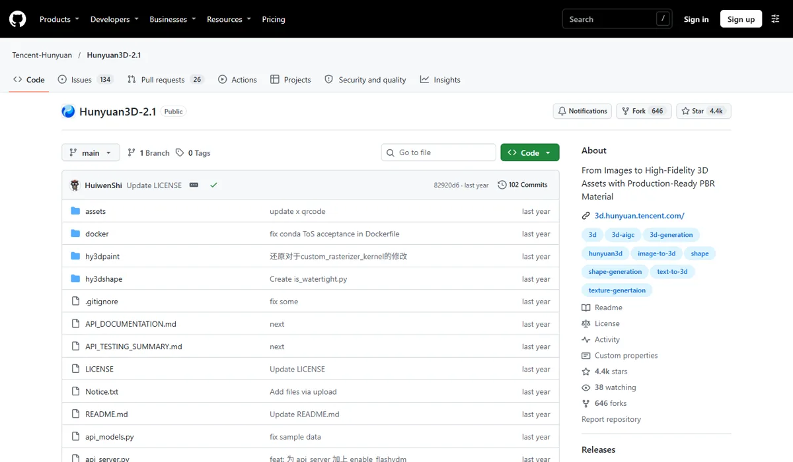
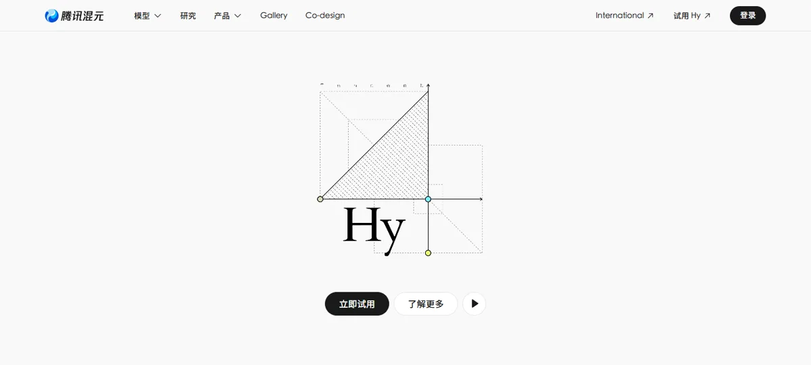

腾讯混元腾讯 · 混元（Hy）
腾讯在生成赛道走的是“3D 领先、开源换生态”：混元 3D 是最受欢迎的开源 3D 生成模型之一，GitHub 主仓库 1.5 万 star，3.0 版本支持 150 万面网格和 8K 贴图，2026 年又开源了能导出到 Unity、UE 的 3D 世界模型。图像和视频则明显落后：图像盲测排第 55，视频未进入第三方榜单。
一页结论
- 3D 是腾讯最强的一条线：混元 3D 从 2.0 起持续开源，2.1 号称首个全链路开源的工业级 3D 生成模型；3.0 支持 150 万面网格和 8K PBR 贴图，3.5 约 60 秒出模S1S2S5
- 从单个物体走向整个世界：2026 年 4 月开源混元 3D 世界模型 2.0，可从文字、图片、视频生成或重建 3D 世界，并导出网格、3D 高斯和点云，导入 Unity、UES6
- 开源换生态：Hunyuan3D-2 仓库 1.5 万 star；2025 年 5 月的 Hugging Face 3D Arena 中 Hunyuan3D-2 在 19 个模型里排第 7S1S7
- 图像、视频落后：HunyuanImage 3.0 文生图盲测第 55，3.5 预览版第 66；视频 HunyuanVideo 1.5 以开源为主，未进入 Artificial Analysis 文生视频榜S3S8
- 分发入口有限：元宝 App 月活 3,733 万，远低于豆包和千问；腾讯同时参投了快手可灵S4S9
01公司介绍
02公司战略
腾讯的主线是“3D 做深、开源做广”：在大厂普遍空白的 3D 生成上建立领先，并用开源模型占领开发者生态，再通过腾讯云积分制 API 变现。
- 3D 持续迭代：Hunyuan3D-2 仓库创建于 2025 年 1 月，2.1 于 2025 年 6 月开源，3.0 在 2025 年腾讯全球数字生态大会发布，此后有 3.1、3.5S1S2S5
- 全链路开源：2.1 公开了模型权重、训练代码和数据处理流程，被称为首个全链路开源的工业级 3D 生成大模型（媒体报道）S5
- 扩展到世界模型：混元 3D 世界模型 1.0（2025 年 7 月）与 2.0（2026 年 4 月）均开源，可生成可漫游的 3D 世界S6S11
- 图像、视频以开源为主：HunyuanVideo 1.5（83 亿参数）于 2025 年 11 月开放权重S8
- 腾讯云积分制变现：3D 生成按次扣积分，失败不扣，新用户赠送 1,000 积分S2
03定位与竞争
一句话定位：为游戏、电商、数字孪生和仿真团队，在 3D 资产与场景生产中，提供可开源部署、能接入现有引擎的 3D 生成模型；图像和视频是补充。
| 目标用户 | 主要入口 | 依据 |
|---|---|---|
| 3D 美术与游戏团队 | 混元 3D 创作引擎、腾讯云 API | 支持 150 万面网格、8K PBR 贴图，以及几何、草图、低多边形等模式S2 |
| 开发者与研究者 | GitHub、Hugging Face 开源模型 | Hunyuan3D-2 仓库 1.5 万 star，2.1 仓库 4,364 starS1 |
| 数字孪生与仿真 | 混元 3D 世界模型 | 可从视频或多视角图片重建真实空间，导出到 Unity、UES6 |
| 普通用户 | 元宝 App | 元宝月活 3,733 万S4 |
04产品与模型矩阵
| 类别 | 模型 / 产品 | 定位 | 状态（2026-11） |
|---|---|---|---|
| 3D | 混元 3D 3.0 / 3.5 | 3.0 最高 150 万面、8K PBR；3.5 约 60 秒出模、8K 输出 | 腾讯云与创作引擎可用S2 |
| 3D（开源） | Hunyuan3D 2.0 / 2.1 | 图片或文字生成带 PBR 材质的 3D 资产 | GitHub、Hugging Face 开源S1S5 |
| 3D 世界 | 混元 3D 世界模型 2.0（HY-World 2.0） | 从文字、图片、视频生成或重建 3D 世界，导出网格、3D 高斯、点云 | 2026 年 4 月开源，创作引擎官网可申请S6 |
| 图像 | HunyuanImage 3.0 / 3.5（预览） | 文生图 | 3.0 开放权重；3.5 预览S3 |
| 视频（开源） | HunyuanVideo 1.5 | 83 亿参数文生视频，腾讯混元社区许可 | 2025 年 11 月开放权重S8 |
| 产品 | 腾讯混元 3D 创作引擎 | 3D 生成的网页创作工具 | 登录后使用S13 |
| 产品 | 元宝 App | 腾讯的 AI 助手 App | 可用S4 |
创作工具
- 混元 3D 创作引擎：网页端生成与编辑 3D 资产S13
开发者接入
- 腾讯云 API 按模型参数切换版本，可控制面数、是否生成 PBR 等S2
开源部署
- 开源仓库提供模型、API 服务代码和 Docker 部署文件S1
- Hunyuan3D-2 开源仓库现有 1.5 万 starS1
- Hunyuan3D 2.1全链路开源：权重、训练代码、数据处理流程S5
- 混元 3D 世界模型 1.0WAIC 发布并开源S11
- 混元 3D 3.0腾讯全球数字生态大会发布S5
- HunyuanVideo 1.5 开源83 亿参数S8
- 混元 3D 世界模型 2.0开源，可导出到 Unity、UES6
用户入口
混元 3D 创作引擎元宝 App
3D 能力
图 / 文生 3D 资产几何、草图、低多边形模式8K PBR 贴图3D 世界生成与重建
开发者与企业
腾讯云 API（积分计费）GitHub / Hugging Face 开源模型
生成模型
混元 3D 3.0 / 3.5HY-World 2.0HunyuanImage 3.xHunyuanVideo 1.5
输出与集成网格 / 3D 高斯 / 点云Unity、UE 导入AI 生成标识


05生成能力与可控性
3D 的精度和输出格式处在大厂前列；图像和视频在第三方榜单上明显落后。
| 能力 | 3D（混元 3D 3.0 / 3.5、世界模型 2.0） | 图像 / 视频 |
|---|---|---|
| 精度 | 3.0 网格最高 150 万面；媒体报道几何分辨率最高 1536³，精度为上一代 3 倍S2S5 | — |
| 贴图 | 8K PBR 材质S2 | — |
| 速度 | 3.5 约 60 秒出模S2 | — |
| 模式 | 标准、几何、草图、低多边形、极速版S2 | — |
| 输入 | 图片、文字；世界模型支持任意尺寸图片与视频S2S6 | HunyuanVideo 1.5 文生视频S8 |
| 输出格式 | 世界模型可导出网格、3D 高斯、点云，导入 Unity、UES6 | — |
| 第三方排名 | 2025 年 5 月 3D Arena：Hunyuan3D-2 第 7（Elo 1298，4,195 票）S7 | HunyuanImage 3.0 文生图第 55；视频未入榜S3 |
腾讯其他
CSM Cube（3D 高斯）
1405
TRELLIS-3DGS（微软）
1384
TRELLIS 网格（微软）
1306
Hunyuan3D-2
1298
Meshy
1243
Hi3DGen
1207
第三方评测怎么说
| 评测方 | 时间 | 对比对象 | 结论 |
|---|---|---|---|
| Hugging Face 3D Arena（Dylan Ebert 论文） | 数据截至 2025-05 | 19 个图生 3D 模型 | Hunyuan3D-2 排第 7，胜率 65.5%；论文发现用户偏好“看起来好看”，贴图模型比无贴图模型高 144 分，而面数与偏好几乎无关，专业流程看重的拓扑结构没有被反映出来S7 |
| 清华大学 WorldReasonBench（The Decoder 报道） | 2026-05-16 | 6 个开源视频模型 | 包括 HunyuanVideo 1.5 在内，开源模型综合得分都不超过 17.9，约为商用模型的一半S14 |
| Artificial Analysis（用户盲选） | 2026-11-04 访问 | 文生图全榜 | HunyuanImage 3.0 第 55、3.5 预览版第 66，落后国内其他大厂S3 |
3D 方面，网上多数排行榜由 3D 工具厂商自办，按本系列规则未采用；混元 3D 3.x 尚未找到合格的独立对比评测。
评测共识：混元 3D 在开源 3D 中口碑领先，但最新的独立数据仍停留在 2.0 版本；图像和视频在独立评测中处于落后位置。
06解决方案与场景
07商业模式与价格
腾讯云按次扣积分收费，同时大量开源；生成业务没有单独披露收入。
| 生成模式 | 每次消耗积分 |
|---|---|
| 标准 | 25 |
| 几何（不含贴图） | 15 |
| 草图 | 25 |
| 低多边形 | 30 |
| 极速版 | 15 |
腾讯云混元 3D 说明，2026-09-01 版本；切换模型版本不额外消耗积分，失败任务不扣积分，新用户可免费领取 1,000 积分。积分对应的人民币价格未在该页列出。来源：S2
| 任务 | 用什么 | 估算成本 |
|---|---|---|
| 一个带贴图的 3D 资产 | 混元 3D 标准模式 | 25 积分；新用户赠送额度约可生成 40 个 |
| 一个白模（仅几何） | 混元 3D 几何模式 | 15 积分 |
| 本地部署 | Hunyuan3D 2.x 开源版 | 无模型费用，需自备 GPU |
08上下游与渠道
09用户、客户与收入
| 指标 | 数据 | 口径 |
|---|---|---|
| Hunyuan3D-2 GitHub star | 15,335 | GitHub API，2026-11-05S1 |
| Hunyuan3D-2.1 GitHub star | 4,364（646 次 fork） | 同上S1 |
| HunyuanWorld-1.0 GitHub star | 2,961 | 同上S1 |
| Hugging Face 下载量 | 超过 180 万次（2025 年 6 月） | 媒体报道，混元 3D 系列S5 |
| 元宝 App 月活 | 3,733 万（2026 年 9 月） | 全部元宝用户，QuestMobileS4 |
| 生成业务收入、企业客户数 | 未披露 | — |
Hunyuan3D-2
15,335
Hunyuan3D-2.1
4,364
HunyuanWorld-1.0
2,961
10用户口碑与容错设计
11版权与合规
12近期动态
13潜在风险分析意见
- 开源领先难以变现：3D 的影响力主要来自开源，云 API 收入未披露，可能“叫好不叫座”
- 开源更新放缓：3.x 未开源、2.x 仓库更新减少，社区可能转向其他开源 3D 模型
- 专业公司追赶：Tripo、Rodin、Meshy 专注 3D，在产品化和工作流上可能更快
- 图像视频掉队：缺少一站式生成能力，难以抓住“图 + 视频 + 3D”打包采购的客户
- 评价标准错位：大众投票偏好好看，专业客户看重拓扑和可编辑性，单靠榜单难以证明商用价值
14综合结论分析意见
关键动作拆解（三问法）
| 动作 | 为什么做（推断） | 效果如何 | 要不要学 |
|---|---|---|---|
| 3D 全链路开源 | 在大厂空白的品类里用开源建立标准和社区 | 主仓库 1.5 万 star，成为开源 3D 的代表S1S5 | 借鉴在新品类里用开源抢占心智 |
| 3.x 转为云服务 | 先进版本留在云上变现 | 3.0 / 3.5 只能通过腾讯云和创作引擎使用S2 | 观望开源与收费的边界要提前设计 |
| 做 3D 世界模型并导出到引擎 | 从“生成一个物体”走向“生成一个场景”，进入游戏和数字孪生 | 已开源，商用案例未公开S6 | 高优借鉴输出格式要能接入客户现有工具 |
| 失败不扣积分 | 降低 3D 生成的试错顾虑 | 已实施S2 | 高优借鉴 |
优势
- 大厂中 3D 能力最强
- 开源社区影响力
- 多格式输出、引擎兼容
劣势
- 图像、视频落后
- C 端入口小
- 变现数据不透明
机会
- 游戏、电商 3D 资产生产
- 数字孪生与仿真
- 世界模型
威胁
- 专业 3D 公司的产品化速度
- 其他开源 3D 模型
- 图像视频对手的打包销售
对本系列三个问题的回答
- 大厂会不会通吃？ 腾讯说明大厂会在不同品类上分化：它在 3D 上领先，却在图像、视频上明显落后，没有一家大厂能在所有品类都领先
- 钱从哪里来？ 腾讯云按次扣积分，但影响力主要来自免费开源，生成业务收入未披露
- 3D 离商用还差什么？ 精度（150 万面、8K 贴图）和格式（可进 Unity、UE）已具备基础；差的是专业流程看重的拓扑与可编辑性，以及能证明这一点的独立评测——大众投票更偏好“好看”
对 AI 产品团队的启示
高优借鉴
- 做 3D 生成时，把“导出到客户现有引擎”作为核心功能，而不是只在网页里展示
- 失败不扣费：对生成成功率不稳定的品类尤其重要
- 三维数字化团队可以优先评估开源的 Hunyuan3D 2.x，用于私有部署和二次开发
观望
- 3D 世界模型：已开源，但商用案例还未公开
- 混元 3D 3.x 的实际质量：等待新的独立评测
不建议
- 只用大众投票榜单评价 3D 模型：要加上拓扑、UV、面数等专业指标
- 直接把混元开源模型用于商用而不核对许可证
信息缺口
以下信息未找到可靠的公开来源，本报告不做推测。
- 混元 3D 积分对应的人民币价格
- 混元 3D 3.x 的独立第三方评测（3D Arena 最新榜单未能读取）
- 生成业务的收入与企业客户数
- 混元 3D 2026 年的最新下载量
- 是否存在针对混元生成模型的版权诉讼
来源
A 官方 · B 权威媒体或第三方 · C 社区（仅用于口碑与线索）。访问日期均为 2026-11-05。
- S1 · ATencent-Hunyuan/Hunyuan3D-2、Hunyuan3D-2.1、HunyuanWorld-1.0 仓库GitHub（GitHub API） · 2026-11-05 访问
- S2 · AWhat's New in Tencent Hunyuan 3D 3.0: High-Precision Geometry and 8K Textures腾讯云 · 2026-09-01
- S3 · BAA-Image-T2I v2.1 Text to Image LeaderboardArtificial Analysis · 2026-11-04 访问
- S4 · BQuestMobile 2026 年 9 月 AI 原生 App 月活 TOP10腾讯新闻（快科技） · 2026-10-20
- S5 · C腾讯开源混元 3D 2.1 大模型，为首个全链路开源的工业级 3D 生成大模型；混元 3D 3.0 发布相关报道老虎证券资讯、AIbase · 2025-06 至 2025-09
- S6 · B腾讯发布并开源混元 3D 世界模型 2.0广州日报（东方财富转载） · 2026-04-16
- S7 · B3D Arena: An Open Platform for Generative 3D EvaluationDylan Ebert（Hugging Face），arXiv · 2025-06（数据截至 2025-05-30）
- S8 · AHunyuanVideo-1.5 模型卡Hugging Face（腾讯） · 2025-11-20
- S9 · B消息称快手可灵 AI 将完成 30 亿美元融资：投后估值 180 亿美元，腾讯参投同花顺财经（援引南华早报） · 2026-07-02
- S10 · A腾讯混元官网腾讯 · 2026-11-05 访问
- S11 · C混元 3D 世界模型 1.0 于 WAIC 发布并开源（搜索结果汇总报道）扬子晚报等 · 2025-07
- S12 · AProject Genie: Experimenting with infinite, interactive worldsGoogle 官方博客 · 2026-01
- S13 · A腾讯混元 3D 创作引擎腾讯 · 2026-11-05 访问
- S14 · BNew benchmark confirms AI video generators look stunning but still can't reason about the worldThe Decoder（报道清华大学 WorldReasonBench） · 2026-05-16
- S15 · B《人工智能生成合成内容标识办法》发布，2025 年 9 月 1 日起施行新华网 · 2025-03-14